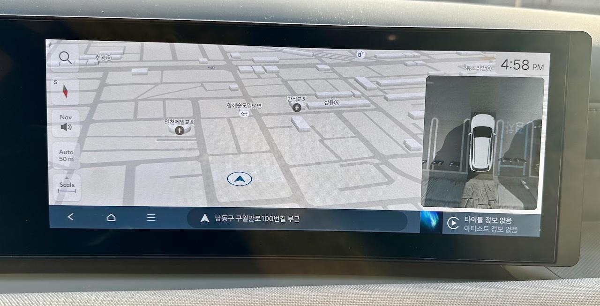

투싼 화면에 항상 어라운드뷰를 띄울 순 없을까?
앞서 어라운드 뷰가 자동으로 켜지게 할 수는 없을까 고민했던 적이 있었다. 거기서는 조건에 따라 어라운드 뷰가 켜지게 하는 설정이 있기는 있었다고 서술했다.
그런데 생각의 방향을 바꿔보기로 했다. 조건이 아니라 항상 어라운드 뷰가 켜지게 한다면 그것도 나름 편할것 같은데 과연 가능할까 말이다.
참고로 이 글은 투싼 하이브리드 페이스리프트(NX4 HEV PE) 기준이다.
항상 어라운드 뷰가 켜져 있게 만들 수 있을까?
답: 안 된다.
이번에도 부정적이긴 하지만 명쾌한 해답이다.
물론 생각해보면 당연한 일이기도 하다. 내비게이션도 미디어 플레이어도 그리고 어라운드 뷰도 같은 화면을 사용하는 만큼 어떤 화면이 항상 화면을 점유하고 있는 것도 말도 안 되고, 거기다 표시될 기능의 우선순위까지 고려해야 하는데 사용자가 원하는 것과 제조사가 생각하는 우선순위는 분명 다를 수도 있다. 하여간 뭔가 곤란한 이야기가 많이 나올 것 같다는 말이다.
설마 이걸로 끝은 아니겠지? 미니 어라운드 뷰의 등장
위의 내용 까지라면 굳이 글로 쓸 필요는 없었을 것이다. 하지만 비슷한 대안이 있었기에 기록해 본다. 그 대안이란 아래와 같다.
대안: 내비게이션 우측 캐러셀에 어라운드 뷰가 있다
ccNC 내비게이션 우측에는 여러 보조 정보가 표시되는 공간이 있다. 기본 상태론 아마 날씨가 표시될 거다. 그런데 지금껏 모르고 있었는데 이 날씨가 표시되는 공간은 캐러셀(carousel) 형태의 위젯이었고 위아래로 스와이프하면 다른 여러 정보를 골라서 표시할 수 있는 기능이었다. 그리고 표시할 수 있는 것들 중에 하나가 어라운드 뷰의 심플 버전, 마음대로 부르자면 '미니 어라운드 뷰'가 있었다.
무슨 소린지 모르겠다면 아래 사진을 보자.
 내비게이션 보조 정보 캐로셀에 어라운드뷰를 선택한 모습
따라서 우측 캐러셀을 스와이프하다 가장 마지막에 있는 어라운드 뷰를 선택하면 위 사진과 같이 대안으로써 써먹을 수 있을 것 같다.
다만 이 '미니 어라운드 뷰'에 단점이 있다면 거리 센서 기능이 빠져있다는 점이다. 그저 가시광 카메라로 보는 주변 상황을 표시하는 기능만 동작한다. 그래도 이 정도만 해도 차선 가운데를 찾거나 주변에 차나 장애물이 얼마나 떨어져 있는지 눈으로 식별은 가능해서 꽤나 도움이 된다.
그리고 이 기능은 보조기능이다. 상황에 따라 띄워놓은 미니 어라운드 뷰가 꺼질 수도 있다. 특히 내비게이션 사용 도중 해당 영역에 부가 정보가 표시되는 경우가 있다. 예를 들어 우회전 해야 할 시점에는 해당 영역에서 미니 어라운드 뷰가 꺼지고 우회전 관련 정보가 표시된다. 그리고 그 동안은 당연하지만 미니 어라운드 뷰가 안 보이게 된다.
결론적으로 투싼에는 상시로 띄워놓을 수 있는 미니 어라운드 뷰 기능이 있긴 하지만 거리 센서도 없고 항상 띄워놓을 수는 없다는 단점들이 있다. 하지만 의외로 쓸 만 하기도 하고 재미있기도 하다.
개인적으로 겪은 문제 중 버그인진 모르겠지만 미니 어라운드 뷰가 표시되던 위젯이 아예 화면에서 사라져버리고 해당 공간이 텅 비어서 표시되는 경우를 겪기도 했다. 다만 1회성이었고 이유나 재현 방법은 잘 모르겠다. 참고만 하자.